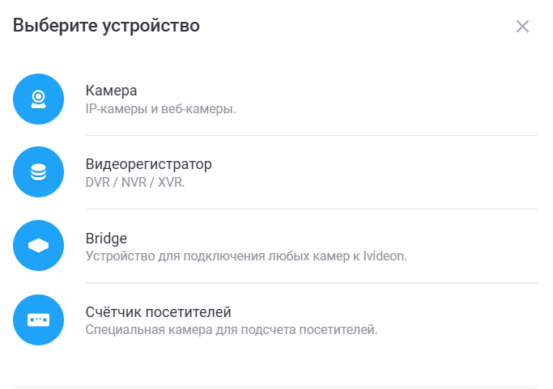
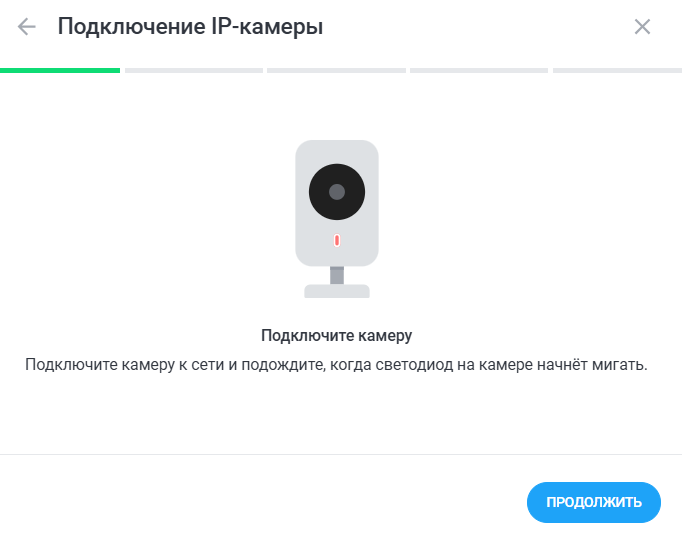
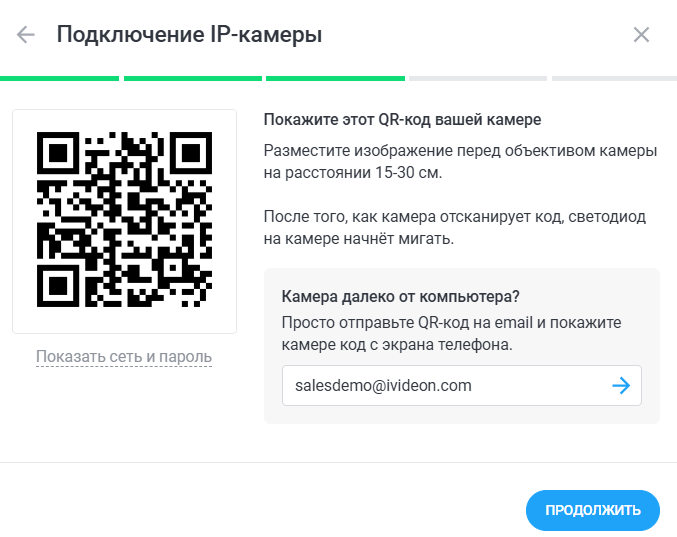
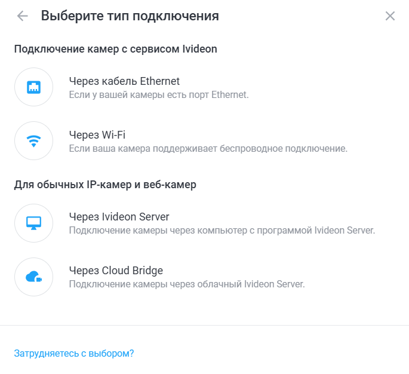
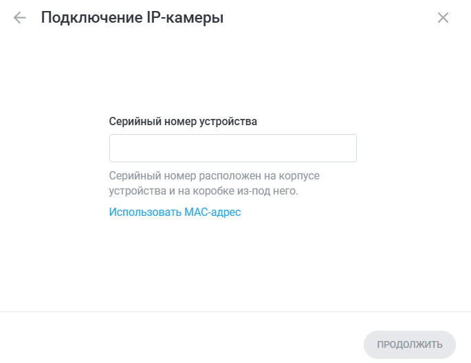
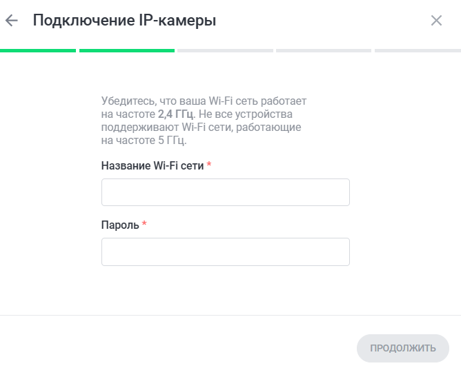
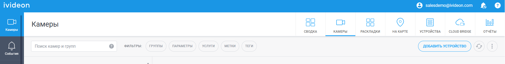

Добро пожаловать!
Следуйте этой простой инструкции для подключения вашей IP-камеры к системе Ivideon.
1
Нажимаем кнопку добавить устройство

2
Выбираем IP-камера

3
Выбираем способ подключения

3.1
Через кабель: Укажите серийный номер камеры (либо нажмите Использовать MAC-адрес и введите MAC-адрес) они расположены на коробке и на устройстве, далее нажмите Продолжить.

3.2
Через Wi-Fi: Подключаем камеру к сети питания

Вводим название сети и пароль
В 99.99% случаев вам нужна сеть в 2.4ГГц. Данные с логином и паролем как правило можно найти на коробке от роутера ( если вы их не меняли)

Далее нам нужно что бы камера посмотрела на QR код и обработала его , после успешной обработка, следуем инструкциям
